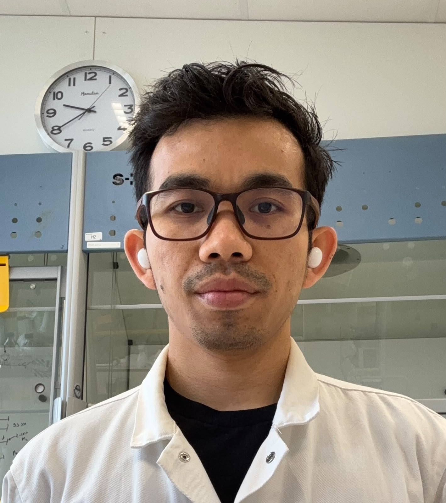

|
Agust Siregar
I am a PhD candidate in Chemical Biology at Velema Lab,
Radboud University, the Netherlands. My PhD is funded by the
TargetRNA
Marie Skłodowska-Curie Action (MSCA) network, where I focus on
method development to study how small molecules selectively engage RNA targets in transcriptome-wide with
applications in antibiotic/drug discovery that target RNA.
My research journey began at the SITH ITB,
where I worked as a Research Assistant on
SARS-CoV-2 whole-genome sequencing during the pandemic. This was followed by an industry role at Etana
Biotech as an Upstream Process scientist, focusing on mRNA-based vaccine manufacturing.
I then completed an MRes at UCL, where I developed an alternative in vitro
transcription pipeline for fast and high-yield RNA therapeutics production in Marco Marquez Lab.
Email /
LinkedIn /
Google Scholar /
GitHub /
Medium
|

|
AWARDS
Some awards I have received:
-
Future Vaccine Manufacturing Research Hub. [2024]. Best Master by Research Synthetic Biology Research Project at Department of Biochemical Engineering UCL, UK.
-
Gold Medal, Best Proposal Project, and Best Written Communication in Global Open Genetic Engineering Competition [2024]. MRes Synbio UCL 2023/24 cohort proposed the idea of a semi-quantitative biosensor for naked-eye detection of arsenic contamination.
-
LPDP Masters Scholarship. [2023]. Awardee of LPDP Scholarship for Master by Research in Synthetic Biology, UCL, UK.
-
Gold Medal Bioinformatics and Synthetic Biology Competition. [2020]. Ideation on designing a portable and accurate diagnostic kit for detecting COVID-19 disease using CRISPR-dCas13 technology.
-
Silver Medal PIMNAS 2020 (Research Category). [2020].
|
UPDATES
- [January 2026] Winter Training School 'Emerging' topics in early-stage drug discovery in Madrid, Spain.
- [January 2026] I passed the PhD go-no go evaluation.
- [November 2025] Attend 2nd TargetRNA workshop at Frankfurt, Germany.
- [May 2025] Meeting Thomas R. Cech, a Nobel Laureate in Chemistry during the TargetRNA MSCA kick-off meeting at Bergen, Norway.
- [January 2025] Excited to start my MSCA PhD fellowship at Radboud University in the Velema Lab, Netherland (with permission from LPDP).
- [September 2024] Compeleted my Master's from UCL and receive VaxHub Prize.
- [January 2024] Our team GenomeCraft represent MRes Synbio UCL 2023/24 cohort win gold medal at GoGEC competition.
- [September 2023] Excited to start my master's at UCL, UK but also worry because this is my first time go abroad.
|
Reverse vaccinology-based multi-epitope COVID-19 vaccine targeting SARS-CoV-2 structural and non-structural proteins induces immune responses in mice
Fibriani, A., Yamahoki, N., Shani, A.M., Rofiqoh, A.,
Siregar, A.L.F., Gunawan, G., Mayorga, C.G.D.,
Tjia, T.O.S., Nugrahapraja, H., Rachman, E., Tan, M.I.
Vaccine X, 2025
|
Analysis of SARS-CoV-2 Genomes from West Java, Indonesia
Fibriani, A., Stephanie, R., Alfiantie, A. A., Siregar, A. L. F., Pradani, G. A. P.,
Yamahoki, N., Purba, W. S., Alamanda, C. N. C., Rahmawati, E., Rachman, R. W., Robiani, R., & Ristandi, R. B
Viruses, 2021
|
|
{kind=link}